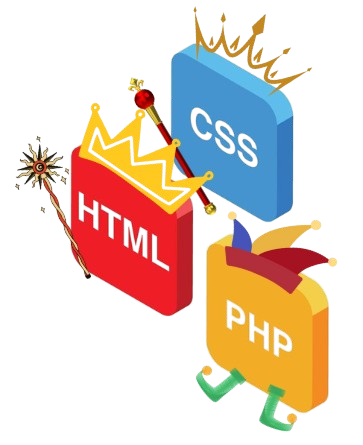

Étudiant en BUT informatique
À propos de moi :
Je m'appelle Damien Ballerat et je suis actuellement étudiant en 1ère année au BUT informatique de Clermont-Ferrand.
Grâce à cette formation, j’ai acquis la capacité de concevoir des programmes informatiques en C, C++ ou en Python pour résoudre des problèmes algorithmiques.
Mes qualités principales incluent la minutie, la patience, l’ambition et un grand sens du travail.
Je suis actuellement à la recherche d’une alternance à partir de l'année scolaire 2025/2026 dans le domaine de la programmation informatique.


Je me forme également aux langages HTML, CSS et PHP pour la création de sites web.
En complément, je maîtrise la création et la gestion de bases de données en SQL.
Dans mon temps libre, je pratique intensément le basketball six fois par semaine et joue actuellement à un niveau pré-national.
J’ai participé à la Coupe de France UNSS Excellence avec l'équipe du lycée en terminale, où j’ai pu jouer contre certains des plus grands espoirs du pays.
Je m'intéresse également aux jeux vidéo de tous genres tels que Balatro ou Cyberpunk 2077 pour ne citer qu’eux.

Compétences informatiques:
Programmation en C, C++ et C# : Création d’algorithmes relativement complexes,
comme un programme en C de jeux a tour par tour basé sur le pierre feuille ciseaux
→ Niveau : 85 %

Bases de données en SQL : Création et gestion de bases de données,
comme pour un projet de gestion de location de Jet-skis incluant le suivi des stocks et des fournisseurs.
→ Niveau : 80 %

Développement web : Conception de pages web en HTML, CSS et PHP.
J’ai réalisé un site personnel pour me présenter en mettant en œuvre ces technologies.
→ Niveau : 75 %

Compétences linguistiques:
Anglais (niveau 90 %) : Maîtrise avancée à l’écrit et à l’oral,
renforcée par mes voyages à l’étranger et des situations nécessitant une communication en anglais.
Je suis capable de suivre des films en version originale et de participer à des conversations téléphoniques en anglais.

Qualités personnelles :

Je suis une personne patiente et ambitieuse.
Ma patience se manifeste par ma capacité à m’investir dans des tâches longues et répétitives,
tandis que mon ambition m’incite à me fixer des objectifs élevés pour repousser mes limites.
Un exemple marquant est mon travail pour obtenir mon baccalauréat :
malgré des résultats moyens en classe de 1ère, je me suis fixé l’objectif d’obtenir la mention "Très bien".
Bien que je n’aie pas atteint cet objectif, j’ai obtenu mon diplôme avec une mention "Bien",
avec des notes de 16 et 20 dans mes spécialités.
Expériences professionnelles :
Été 2022 et 2023 :
Travail saisonnier dans les champs agricoles à Saint-Beauzire (63).
Principales tâches : castration de maïs et contrôle des tournesols.
Ce travail demandait une endurance physique importante.